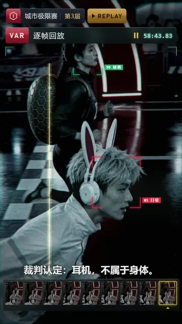
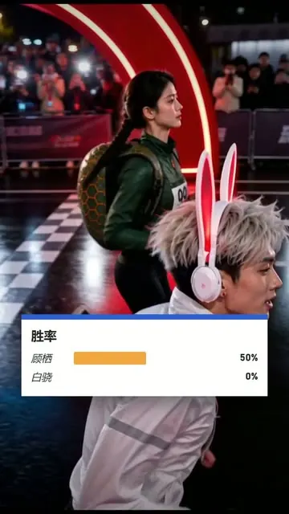
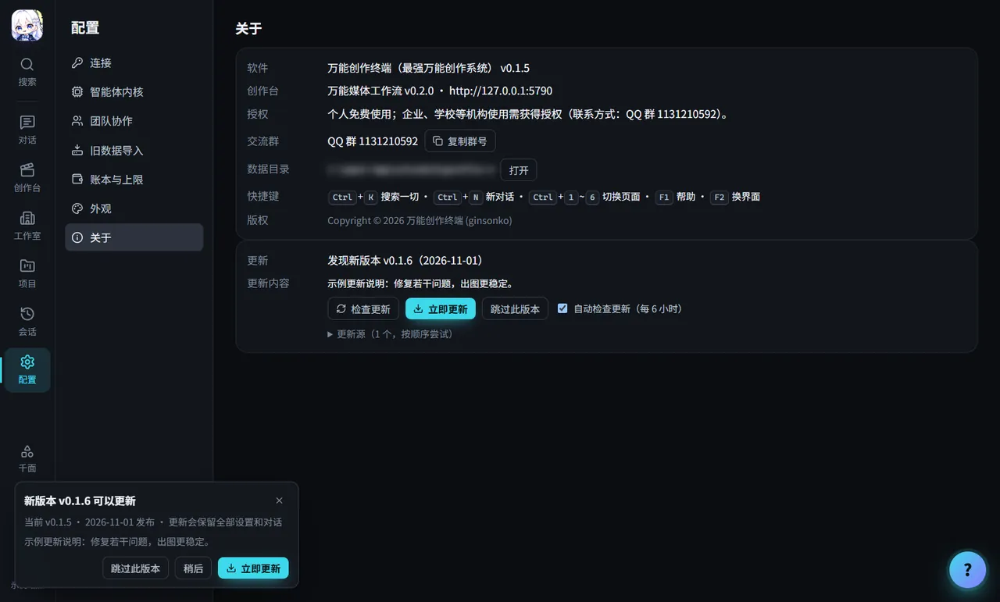

01
下载并安装
在下方选择 Windows 或 macOS 版本。Windows 双击安装无需管理员权限；Mac 拖进「应用程序」，首次打开按 这里的方法 放行一次。
把 Codex / Claude Code / Devin 多内核对话与全套媒体创作台装进一个桌面软件。漫剧、超级导演、制图、音乐、无限画布、百宝箱全内置，登录账号或接入任意 OpenAI / new-api 兼容站点即可开工。
Windows 下载Windows 10 / 11（64 位）· macOS 13 及以上 · 全部版本与校验值 · 全部版本与校验值 · 让 Agent 帮我装


下载装好、接上账号或任意兼容 API 站点，说一句话即可看到成品落盘。
在下方选择 Windows 或 macOS 版本。Windows 双击安装无需管理员权限；Mac 拖进「应用程序」，首次打开按 这里的方法 放行一次。
可以直接注册登录官方账号充值或核销兑换码；也可以连接任意 OpenAI / new-api 兼容站点（支持手动填地址和 Key，或一键导入）。
回到首页输入你的想法，成品自动保存到「作品」和本机目录。点任意一句复制试用：
先用代码做出不花视频费的动态样片，你看完节奏和梗再挑最搭调的风格卡开拍；支持全能多图参考、大批付费前先发确认清单，中途插话立刻优先。







每一项都用一句大白话说清楚能干嘛，再告诉你第一步怎么点、怎么用。


给一个点子，帮你从角色定妆照、场景设定、分镜出图、配音配乐一直做到成片剪辑，内置 30+ 套画风卡。
在输入框上方切到「漫剧总监」，说出故事和想要的画风，按阶段确认设定图和样片即可出片。
把整本小说丢进去，自动拆集立设定、先试拍第 1 集，开启黄金前三集高配，一路做到几十上百集连载。
左侧打开「剧集 / 流水线」，导入小说与总预算，先看第 1 集试拍效果，点头后自动推进全书。
11 张导演风格卡拍广告、MV 和短片：先出免费代码样片看节奏，再用全能多图参考和确认清单稳稳出正式画面。
打开「超级导演」标签，输入故事即可先看免费样片；上方有 27 秒真实合集可直接观看。


专门搞定海报、封面、中文排版、PS 式精修与定妆照自动清边放大，内置 8 大平面设计风格卡与思源字体一键安装。
需要海报/封面时点「交给制图总监」；任何已生成的图片大图上也能点「交给制图总监精修」，原图不动出新图。
独立「音乐」页直出原创歌曲、主题曲、说唱与器乐分轨，自动附带伴奏、LRC 歌词与 1080p 歌词视频；漫剧配音自动贴合画面口型，不改像素不 P 嘴。
左侧打开「音乐」页，写下曲风、情绪或歌词主题即可一键成曲；配音与配乐也会在出片时自动衔接。
把剧本、角色设定、分镜首帧和视频镜头摆在一张可缩放画布里连线管理，改哪一镜都不影响整条片。
在左侧「创作台 → 画布」新建或由对话自动生成画布，拖拉节点微调单镜，最后点「导出视频」自动混音效配乐。
一次填入多组提示词或参考图，并发批量生图、批量生视频，并原生支持 H3 运镜预设合成，效率成倍提升。
左侧进入「创作台 → 批量造物」，批量粘贴提示词或导入素材，选好画幅与运镜，一键并发出片。
内置 44+ 款本机免扣费音视频与图像处理小工具：一键抠图、换天、超分放大、人像美颜、隐私打码、画面识字、字幕烧录。
点左侧「百宝箱」，选中需要的工具卡片，把图片或视频拖进去、调好简单滑块，本机直接运行不花 API 费。
内置医院导诊、高奢极简、科技产品、门店预约、国风新中式 5 套网站母版（零境外慢源微信秒开），以及带防幻觉护栏的知识库智能客服。
在首页点击「做个漂亮网站」或「做个专属智能客服」，丢进资料或常见问答，先审首屏视觉稿再导出可直接上线的工程。
B站、抖音、YouTube、微博等上千个网站一键下视频或音频；整段分享口令直接丢进来就能解析，难抓的网页还会用内置浏览器嗅探兜底。
直接把视频链接或整段分享口令发到对话里，说「帮我下载这个视频」或「只要音频」，成品自动存进对话的「下载」文件夹。
Codex、Claude Code、Devin、Gemini 等多内核任选，任务跑一半也能随时换内核和模型；多条连接排成号池，额度用完或拥挤时自动接力不中断。
在「配置 → 连接 / 智能体内核」排好顺序并打开「额度接力」，日常干活遇到限流自动切换，恢复后自动切回。
大任务自动拆成清晰的步骤计划卡，做到哪一步一眼看清；多件事并行有值班卡，按 Ctrl+Enter 插话立即优先，已做完的成果全保留。
把复杂目标直接发到对话里，先看一眼计划卡确认步骤；过程中随时补充要求，它会带着已有文件顺着改。
内置风格卡一览 · 漫剧总监与制图总监可直接套用


既能单人轻量对话，也能组建多角色 AI 团队、跨电脑局域网协作，还能按习惯随时切换 8 套界面。
说一句业务目标，自动规划总监、编剧、画师、剪辑等岗位分工并建好群聊；在像素与 3D 工作室里实时看到每位伙伴在忙什么，同主题对话自动归档为项目。
按 F2 随时在工作室、对话、磁贴、口袋、桌面、终端（以及扭蛋解锁的驾驶舱、街机）之间切换，全部数据共用。
软件本身不捆绑特定站点。既可直接登录官方账号，也能接入你自选的任意 OpenAI / new-api 兼容站点。
适合所有兼容站点：填一次接口地址和 Key，再选好文本、生图、视频三个默认模型即可。
https://你的站点域名/v1。
不确定选哪个模型？文本选站点推荐的对话模型，生图选带 image 字样，视频选标注为视频的模型。
智能 Key 自动挑选健康线路；点一下「一键导入」，文本、生图、视频和编程助手模型一次配好。

确认前不会改动任何现有设置；导错了可在「配置 → 连接」撤销。详看 通用版使用手册 ↗ 与 智能路由站接入手册 ↗。
分章节新手教程与 80 秒宣传片，点任意章节直接跳到那一段。
一条视频讲完下载安装、连接站点、对话出图出视频、创作台、千面界面、更新与卸载。
一句话出图、出视频、剪成片，连接任意兼容 OpenAI 的站点即可开工。
创作台三大主页、音乐创作、超级导演、做网站与客服、漫剧黄金前三集全面上线。
左侧导航直接打开无限画布、批量造物（多提示词并发出图出视频、H3 原生运镜合成）与百宝箱（44+ 款本机免扣费音视频处理、抠图超分、字幕烧录即填即跑）。
独立「音乐」页支持写词谱曲、主题曲、说唱与器乐分轨，本机直出母带、伴奏、LRC 歌词与 1080p 歌词字幕样片；漫剧与成片配音自动贴合画面开口包络，全程不改像素不 P 嘴。
登录官方账号即可一处充值、兑换码核销并打通对话、生图、生视频与在线高清配音，无需单独填配音 Key；智能路由升级为首选软偏好，繁忙时自动回退健康线路。
漫剧总监与超级导演新增两张实战风格卡；超级导演开局可选「先不选风格卡」，等免费代码样片拍板时再推荐 2–3 张最搭调的风格卡敲定开拍。
超级导演拥有独立标签与关闭按钮；默认全能多图参考让人物场景更稳、动作更放得开；每批付费生成前先发确认清单，多任务带值班卡，中途插话立即优先。
首页新增「做个漂亮网站」（5 套母版、零境外慢源微信秒开）与「做个专属智能客服」（防幻觉护栏、密钥严留服务端）；网页视频下载支持整段分享口令提取与内置浏览器流嗅探兜底。
长篇连载支持先试拍第 1 集看人物和节奏再跑全书；可开启「黄金前 N 集高配」立住开篇留存，后续集数自动切回省钱或均衡档控住总预算。
强、标准、日常档默认升级至 6.2 等新一代模型；修复文档状态识别与长对话衔接细节，跨整点刷新令牌时自动重连续跑。
本项功能留到 0.7.0 推出，当前 0.6.8 不包含桌宠。届时将提供可选的桌面常驻助手、思维云朵、「教一次」可分享技能包与离线语音陪伴。
当前版本 v0.6.8 · 免费下载安装，支持 Windows 10/11（64 位）与 macOS 13 及以上。
历史版本与完整校验清单见 GitHub 发布页 ↗，下载缓慢也可在 QQ 群 1131210592 获取群文件。
首次打开放行步骤、温和的自动更新机制，以及可保留数据的干净卸载流程。
内测版尚未购买代码签名，出现蓝色窗口「Windows 已保护你的电脑」时：
Get-FileHash .\文件名.exe -Algorithm SHA256若提示「已损坏」，在终端运行以下一行后再打开：
sudo xattr -dr com.apple.quarantine /Applications/OmniCreator.app启动 1 分钟后检查一次新版，之后每 6 小时一次。支持 立即更新、稍后、跳过此版本，下载支持断点续传并校验 SHA256，升级保留全部设置和对话。

在软件打开「配置 → 关于」点「卸载本软件」，或在 Windows「设置 → 应用」里找到「万能创作终端」卸载。卸载前会先关闭后台进程，并询问是否删除你的数据（默认保留）。
若需清理配置与记录，先在「配置 → 关于」点「清除软件数据」，然后删除免安装版的 .exe 文件即可。
退出软件后，把「应用程序」里的 OmniCreator 拖到废纸篓。如需彻底清除数据，在访达前往并删除 ~/Library/Application Support/万能创作终端。
复制下面这段话，发给 Codex、Claude Code 或任何能运行命令的 AI 助手。它会自动下载、校验 SHA256、安装并打开软件。
Agent 会先核对 SHA256 校验值，不一致立刻停下，绝不会向你索要任何 Key 或密码。
正在准备安装口令……
从 0.6.8 起，原通用版与 TideVerse 版合并为统一的「万能创作终端」中性版。老 TideVerse 用户的更新源继续保留，从 TideVerse 版升级会自动接着用原来的记录（对话和配置），不用导入。
下载、安装和个人使用软件完全免费。内置 44+ 百宝箱本地工具不花 API 费；调用云端对话、生图、生视频模型时，按你登录的账号或所连接 API 站点的实际用量计费，软件内置账本与消费上限。
你可以直接在软件里注册登录官方账号并充值 / 核销兑换码使用，也可以连接任意兼容 OpenAI / new-api 接口的第三方站点（支持手动填地址和 Key，或支持智能路由站点的一键导入）。
0.6.8 不包含桌面常驻助手 / 桌宠功能。该特性与离线语音陪伴安排在 0.7.0 推出。
一般一个 Key 就够，填一次全部共用。如果站点把文本、生图、视频分在不同分组，或你想分开看花费，可以在连接表单里给对应项点「单独设置」。
不用提前装。Windows 安装版内置 Codex；免安装版和 Mac 版缺少时，在「配置 → 智能体内核」点「一键安装 Codex」即可，装在软件自己的目录里，不改你电脑原有配置。
常见于免安装版或浏览器拦截。可在站点弹窗里复制导入码，回软件按 Ctrl+V（Mac 上 ⌘+V）；或下载导入文件，在「配置 → 连接」点「打开导入文件」。导入链接通常 10 分钟内有效、单次可用。
Key 用系统自带加密（Windows DPAPI / macOS 钥匙串）保存在本机，不会上传。每个对话有独立的成果文件夹，在右侧「作品」栏点击即可「在文件夹中显示」。
绝不强制更新。有新版时左下角提示，可选「立即更新」「稍后」或「跳过此版本」，下载校验 SHA256，更新保留全部设置和对话。
本站纯静态、兼容 config.json 规范与 check-site.mjs 自动化检查。只需修改 config.json 中的 partner 字段并同步生成 config-fallback.js，详见 合作方托管说明。
个人使用免费；公司、学校等机构使用需获得授权。软件内按 F1 可随时问帮助助手，也可以加入 QQ 群 1131210592 或前往 GitHub Issues 附带版本号反馈。